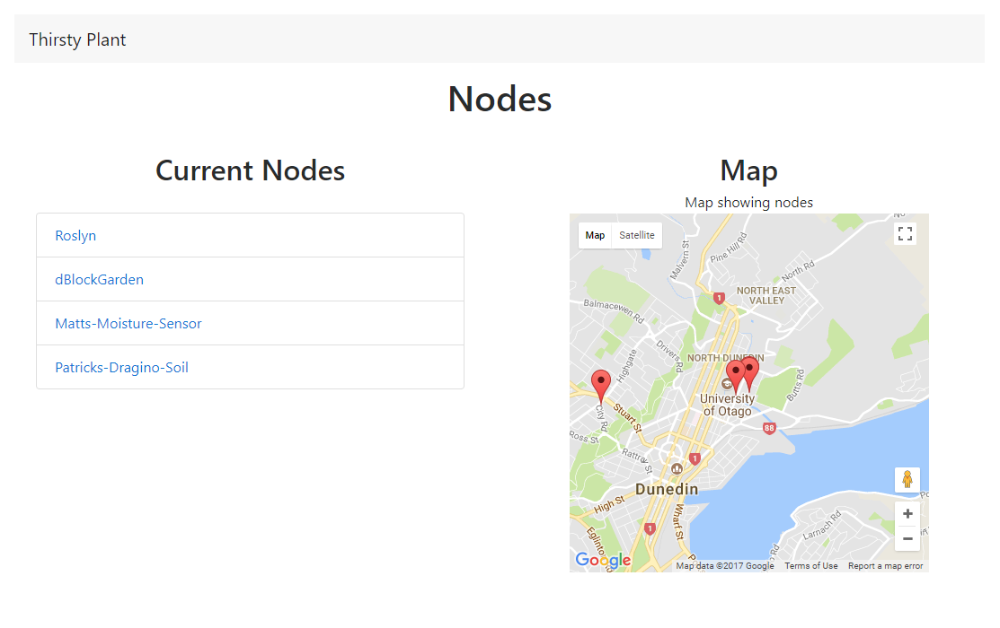

During second semester the group project plan was to deploy a LoRaWAN network, after spending the first semester researching and developing; it was time to get the project moving. We have found that simplistic documentation is important for understanding other aspects of the project and for new group members to understand where the project is currently sitting.
My tasks were to; manage the deployment and configuration of the Multitech Conduit, contact various stakeholders, organise and build gateway enclosures, engineer a solution to map the range of the Multitech Conduit once mounted on the roof of H block and to build a prototype node in an enclosure.
I believe I completed all tasks to a high level and within the timeframe required, I am pleased with the results. At times, I did feel pressure to complete a task, but I was able to get the situation under control quickly and efficiently. In my role of organising and management, I assisted with most aspects of the project at some point and had to think on my feet a number of times; such as finding one of the solutions to deliver 5v power to the Multitech mDots while testing
Firstly we hosted a local LoRa server so we could develop locally, this was great at the start but I believe it would have been more beneficial if we could have migrated to Amazon Web Services (AWS) earlier, as it would have fixed most of the issues we had with ports being blocked. Although we had a lot of issues with not knowing what ports we needed, we usually got them opened relatively quickly. Once we decided to relocate our local LoRa server to the cloud it was within my role to orchestrate the move, the platform we chose was AWS. This allowed us the flexibility to scale the server as big or as small as we required, thus ensuring unobstructed access to the server from nearly any network.
After having little success with the devices we had it was decided to purchase a Multitech Conduit from Australia, this was an expensive purchase but turned out to be a great solution for our needs. Once combined with the more powerful antenna it covered a large area of Dunedin. There were a number of small issues that required me to contact the representative from the company who we purchased the gateway from. One of the issues was that the Multitech mDot Box (a device to test the Conduit gateway) was not configured to work with the AUS and NZ frequency range, this was a difficult problem and necessitated me talking with the representative on two occasions as the first firmware did not work as intended. The process has been documented here: Configure the Multitech mDot Box to New Zealand Frequencies
I was ecstatic to see the Conduit operate and be installed on the roof of H block building at Otago Polytechnic; it gives a real sense of completion and a job well done. Due to the quick install we did not have time to change the static IP address that was on the device from testing, so to fix this it was necessary to get another port opened on the OP Guest wireless network and connect to the device using its old address, from there the process was very painless. The Conduit provides for a number of handy IP defence features such as DoS prevention, a Ping limit and Brute Force Prevention. These features are enabled by ticking a box in the gateways firmware and greatly enhances the protection offered. I would have liked to have had the chance to enable more security features before showcase, this would have really made it complete. However I understand that at times we have restrictions and unfortunately certain things cannot be implemented. I plan to do this myself before I leave Otago Polytechnic after graduation or pass it on to the team for next year.
As part of the deployment plan it was important to find enclosures for the two raspberry pi and mCard gateways. Fortunately, I found three old outdoor wireless access points that I could salvage to house these. Being old hardware I needed to strip most of the interior and figure out what was reusable, I kept the pelteir cooling unit and the foam insulation. After a couple of conversations with the engineering department at Otago Polytechnic, we had come to an agreement on modifications to be made. They replaced the cooling/mounting plate to accommodate the new hardware and drilled a mounting point for a thermocouple to measure the cooling plate temperature. While they had one of the gateway enclosures I worked on the second, working out how to power the hardware and what the peltier would require to start cooling it. When we were finished we ended up with two gateways nearly ready to go, I decided to find a home for at least one. I contacted Kavanagh College and discussed the possibility of them hosting a gateway and becoming more involved by allowing students access to the network. The school were very interested in how they could become more involved with the possibility of using it as a teaching tool. Because of this, it looks as though we will be installing a gateway by the end of 2017 or the start of 2018.
I am happy that we finally got a gateway deployed, after a bit of back and forth. Unfortunately, there were some miscommunications between the team, product specification sheets and the installers in regards to the antenna connector types required for the Multitech Conduit and the antenna. The documentation showed an incorrect connector so after several attempts by the installers supplying cables with incorrect connectors a decision was made the device needed to be taken away to be certain it was the correct connector.
Documentation: Multitech setup Setup conduit from factory Network changes for connection issues Network changes Node-RED mDot Box Node-RED flow for the Multitech mDot Box Configure mDot Box frequency Configure the Multitech mDot Box to New Zealand Frequencies
As part of the wider plan we have engineered working nodes that connect to a web application that displays the most up to date information. The example node takes the current moisture content of the soil; parse it into a string then sent over the LoRa network. The website is designed to automatically populate with data from the server, the node list is currently hard coded but it is a possibility to get this using the servers API. When a node in the list is clicked; that nodes relevant data is displayed in a graphical dashboard which in our case is a gauge.
The website was originally hosted using GitHub pages, but we soon realised that we would not be able to use it as they only support static websites. We looked at hosting solutions or hacking through getting it working with GitHub pages. The solution was to host off our AWS server at http://iot.op-bit.nz/ and we kept our LoRa server at https://iot.op-bit.nz/ this allowed us to use the same URL for showcase.
I designed the basic template and formatting for the thirsty Plant node website to help the group get it going quickly before showcase. It was a little bit disappointing that we did not get a website or application tutorial made, due to us all needing to combine our code and get ready for showcase, unfortunately this became a low priority. Ensuring the project has coherent guides and documentation that allow for easy community interaction is very important, we became delayed. Sadly, parts of the website were on the backburner such as appearance and dynamic features. It would have been awesome if we had the time to implement dynamic features such as pulling the node list from the server, automatic node placement on the map and some other tidying features. However I am pleased that we were able to show something at showcase and it didn’t break.
During this semester, my biggest task was to manage/organise the project, being the point of contact for the group. We could get a better understanding of what needs to be done, by whom and when by, in relation to our goals. I helped to parallelise workloads and move the project further forward and at a faster rate.
I was excited by having the opportunity to manage/organise the project, it is an important role that other team members rely on for guidance and direction. This was a huge task for me both in effort and time, but I enjoyed this role as it meant I got to communicate with other stakeholders and work on all parts and oversee the project. My biggest challenges included; communicating with large numbers of people at any one time, I did this by being available on slack and email when possible, researching and ordering components/equipment, orchestrating people and merging projects into a complete coherent deliverable.
When a group member needed to make a purchase, they would generally come to me with what the requirements were, I would further research the item to check compatibility and alternatives. If anything was found I would return to the group member and confirm details, I would then go to Tom and Rob to have the purchase approved and ordered. When possible, we tried to source parts from the same retailer/s and group purchases together, this reduced the number of purchase orders we would put through to get approved and in turn sped up delivery times.
A major part of this role was communicating between stakeholders and the team, conveying information in a summarised manner to not confuse either party. This is partly why I was the point of contact for most of the stakeholders, the less confusing the better. As I am leaving the project this year I will need to pass on further information about purchases, contacts and other relevant information to Tom, I intend to document these details and email him.
Ensuring stakeholders were well equipped with their part of the project meant each could start and work on their part as soon as possible. An example being that the engineering department needed thermal compound, the quicker I could get it to them, the earlier we would have our gateway back. There were lots of little tasks like this that ended up taking a large proportion of my time.
Collating individual team members tasks into something that works was a challenge, each piece should have been scheduled and not just some. The benefit of a full schedule would have reduced any downtime waiting on the next piece, better control and minimise the risk of resources potentially being wasted. At times we were too dependent on each other’s work needing to be completed before we could move on, this is a downfall and we could have continued with other work while waiting or help the others with their work load. It would have been good to see more teamwork during the semester and not just nearing showcase, some tasks would have been more effectively shared. Having said this I thought we did well to get done what we set out to do.
I felt it was difficult to manage so many different aspects of the project and in hind sight I would have benefited by using Trello more than I did, this would have assisted me to gauge where we were behind in meeting milestones and who in the team was available to offer support to another team member. I should have asked for more help with organising parts such as moving to AWS. There were so many people needing things done that I needed to take a second or two to prioritise, this greatly helped me sort through the tasks and where my attention needed to be.
We found that we would need to test the range of the Multitech Conduit gateway so that community members could see if a planned node would be covered or not. It was my task to engineer a solution that would incorporate a GPS module with the Dragino LoRa shield and an Arduino mega, I have also done the same for the mDot so both devices have a known range and any area not covered in the indicated range would require a more powerful antenna.
Unfortunately, right before I started range testing the GPS module started giving inconsistent readings and ended up sending from its last cached location (Otago Polytechnic), however the node still sent this false location, so we were able to use it for seeing how far it would work. As the GPS uses a significant amount of battery and relies on a GPS fix, Brendan and myself decided that it would be more beneficial to use another node that measured soil moisture and use it to the same effect. I felt disappointed that the node which I had spent a good proportion of my time on had let me down, but I felt positive that I could still get a coverage map and I appreciated the help from Brendan to get the largest part of the map done and Oscar for coming on a walk to Ravensbourne.
We accomplished this by running a python script that was an MQTT subscription to the node, so when the node sent data to the server we were able to decrypt it and read the value, whether or not we got a response from the server told us if the node was in range. The script was run on my cell phone so I was quickly able to see if the node was working. I marked on a map locations where the node would just stop sending, this gave us the outer boundary for the mDot nodes. To cover such a large proportion of Dunedin we were driving around for over 3 hours and 40 minutes, this does not include the hours walking and a large number of test walks.
I would have liked to have been able to test the GPS node earlier but unfortunately that was not possible due to delays with the gateway install, on reflection I should have confirmed an install date with the installers and tested the GPS node while the gateway was in D block at Otago Polytechnic.
My original intention was to use a modified version of a python script to decode the GPS data and then store it in a csv file which could be uploaded to google maps/earth to map the gateway coverage. I was happy that this script worked as intended, it decoded the coordinates and stored them in a csv file, but due to the GPS node not working correctly I was unable to fully use it instead using a stripped down version that just displayed to the console.
Documentation: GPS node – mDot mDot GPS code mDot node Github page
I decided that it would be a good idea to make a prototype node that would be able to be deployed easily. For this I made a garden sensor that collects information from a soil moisture sensor. This package is run on a Multitech mDot, is battery powered and self-contained. The idea is that this shows a relatively simple node that anyone can make and deploy for themselves, specifically this is following some of Brendan’s tutorial. We were fortunate enough to have a 3d printed enclosure made thanks to the engineering department.
Between Brendan’s and my own node/s we noticed we would get different readings at times, after a big of debugging and testing we found that the sensors were each a bit different. Brendan’s ran low compared to others and mine higher, after a few tweaks we got them close enough to each other to be satisfied. With more time you would be able to modify the code of each node to get the same number output.
Just before showcase I saw we had some spare hardware and decided it was a good idea to have a node that was only wired on a bread board as this showed how simple the nodes can be. This made it very easy to describe to people how it works, you could show them the exact parts required and explain how they worked. This was much better than trying to explain the ones in enclosures that had been designed to be small but not necessarily easy to see what plugs into what.
The node and gateway 3d models will be available on the project Github website after I get them from the engineering department who have been great supporters throughout the project and have assisted us in making a professional looking product. The enclosures are designed to secure the battery and an mDot with a slot for sensors to come out, they can be painted and easily waterproofed with some silicone.
Overall, I feel that my completed tasks each have supporting documentation and were executed in a professional and timely manner, contributing to the success of the project. There are aspects of my project management I have identified and noted in this write up, I have learnt from. Communication is key across the stakeholders, keeping team members on task and providing timelines are imperative for good project management. Recognising that using tools to assist with tracking the progress of the project and acknowledging milestones as we met them are good measurable ways to pre-empt any issues which may arise, minimise the risk of the project not being completed on time and to celebrate what has been accomplished.
I feel that it is important to keep the community interested and involved for the project to succeed. I am proud of what we have completed as a team knowing other teams before us were not able to complete the tasks and I look forward to seeing where the project goes in years to come. My feeling is one of pride that we have left a footprint which others will build on. We will make a real difference for Kavanagh College and many more to come.